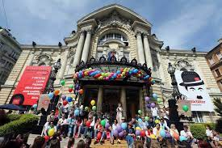
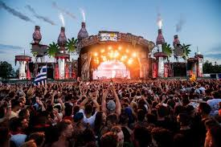

Saját történetem


Hogyan teltek nekem a május elsejék?
Nekem a május elsei fesztiválok nagyon jol teltek és élveztem is őket.
Valamikor a városban fesztiválok voltak meg eggyüttesek léptek fel és sok érdekes program volt.
A programok között voltak versenyek és ügyességi feladatok.
Volt olyan program aahol nyerni is lehetett én egyszer nyertem egy üvegsakkot.És még főzöverseny is volt.
Rengeteg árus volt meg olyan helyek ahol föztek.
Én Nem minden május elsején voltam bent a városban.
Valamikor otthon sütkéresztünk meg bográcsoztunk és otthon élveztük a május elsejét.
Az iskolában is megtartottuk a munka ünnepét mégáprilis vége fele.
Az iskolában programok,zene,társasjáték,foci,kosár és még sok minden volt.